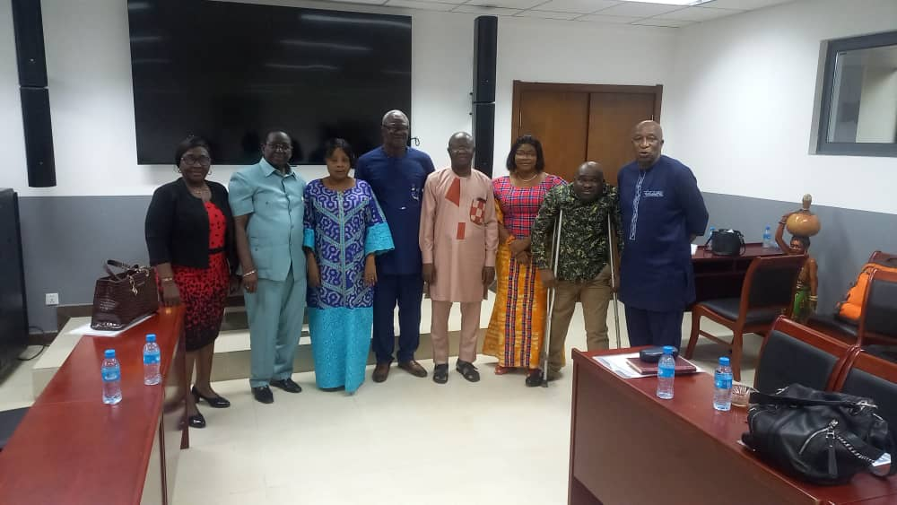

Independent & Impartial
EON-SL observes electoral processes independently, impartially and without partisan affiliation.
An independent, impartial and non-partisan consortium of civil society groups, faith-based and professional bodies, youth and women’s groups observing processes and procedures throughout the electoral cycle in Sierra Leone.
EON-SL observes electoral processes independently, impartially and without partisan affiliation.
Our work covers electoral activities and procedures before, during and after elections.
We document observations, identify challenges and provide recommendations to relevant election stakeholders.
From civic engagement and voter education to electoral observation and reporting, EON-SL works with citizens and stakeholders throughout the electoral process.

Elections Observer Network Sierra Leone (EON-SL) is an independent, impartial and non-partisan consortium of civil society groups, faith-based and professional bodies, youth and women’s groups.
Established in 2020 with 170 members, EON-SL observes processes and procedures throughout the electoral cycle while mobilising citizens and complementing the efforts of Election Management Bodies.
EON-SL seeks to contribute to free, fair, inclusive, peaceful, transparent and credible elections in Sierra Leone.
Is a democratic society where transparent, inclusive and credible elections exist for the furtherance of the wishes and aspirations of the citizens.
Our mission Is to work in partnership with all Election Management Bodies (EMBs) in enhancing citizen’s participation in the electoral processes.
EON-SL's work is structured around key areas that support credible elections, democratic governance and meaningful citizen participation.
Promoting transparent and accountable democratic governance.
Supporting informed observation and discussion of electoral processes and reforms.
Encouraging informed and meaningful citizen participation.
Supporting peaceful participation and awareness of rights.
Supporting women's participation in political and electoral processes.
Generating evidence through research, monitoring and evaluation.
EON-SL's observation work follows a structured process for collecting, analysing and communicating information from electoral activities.
Monitor electoral activities and procedures.
Record relevant observations and information.
Examine evidence and identify issues.
Communicate findings through reports.
Identify practical recommendations.
Track issues and recommendations.
EON-SL promotes citizen awareness and participation across the electoral process, including voter education, peaceful participation, human rights and inclusive political participation.
Citizens should understand their electoral rights, responsibilities and the importance of peaceful and informed participation.
Explore Civic EducationCitizens and organisations can contribute to EON-SL's work through observation, volunteering, training and partnership.
Register your interest in participating in EON-SL observation activities.
Observer Registration →Join EON-SL's wider civic and electoral engagement efforts.
Volunteer With EON-SL →Explore opportunities for institutional and community collaboration.
Partnership →Explore EON-SL's work, electoral information, reports and opportunities to participate.